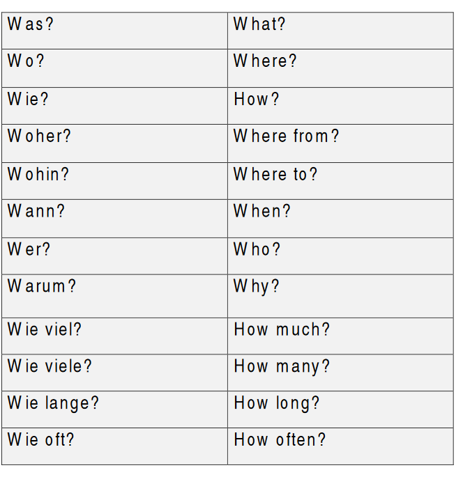

Questions – Fragen
It is very simple in German to make a question. In German, there are two types of questions
 Ja oder Nein Frage (Yes or no question)
Ja oder Nein Frage (Yes or no question)
In a normal sentence, the verb comes in position 2. With yes/no question, the verb is in position 1. In this type of questions, we answer with Ja/Nein (yes/no).
Zum Beispiel (For example)
Du wohnst in Berlin. (You live in Berlin.
Frage (question): Wohnst du in Berlin?
(Do you live in Berlin?)
Antworten (Answers):
Ja, ich wohne in Berlin / Nein, ich wohne nicht in Berlin.
(Yes, I live in Berlin/ No, I do not live in Berlin)
We use ‘nicht ’ to
negative the sentence
- W-Fragen (W-questions)
It is the same as yes/no questions but we only add the question word at the first position before the verb.
the first position
question word verb subject
Wo wohnst du? (Where do you live?)
Wie heißen Sie? (What is your name?)
Here is a list of question words.

Übung (exercise):
Schreib die richtige W-Frage.
(Write the correct question word.)
- ..... machst du? (what are you doing?)
- ..... heißen Sie? (What is your name?)
- ...... Kommen Sie? (Where are you from?)
- ...... lernst du Deutsch? (Why do you learn German?)
- ...... wohnt er? (Where does he live)